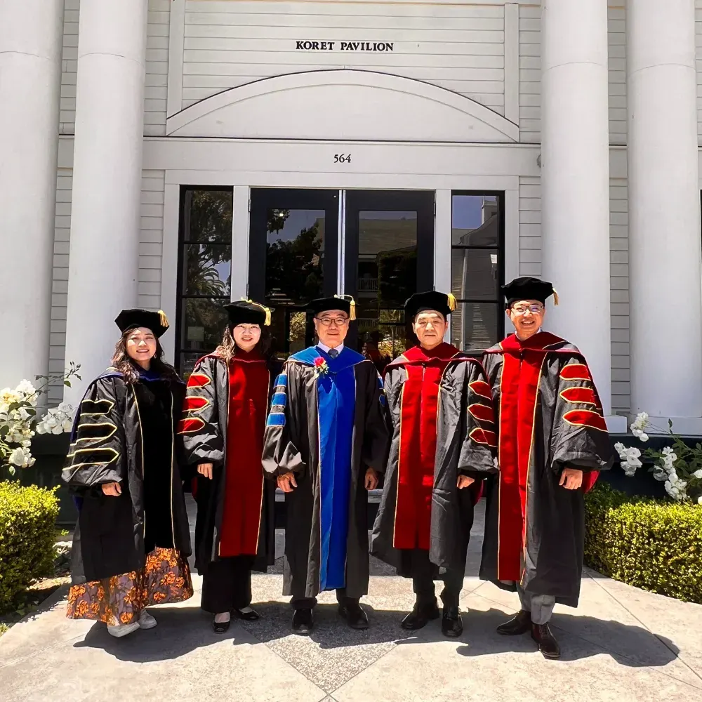
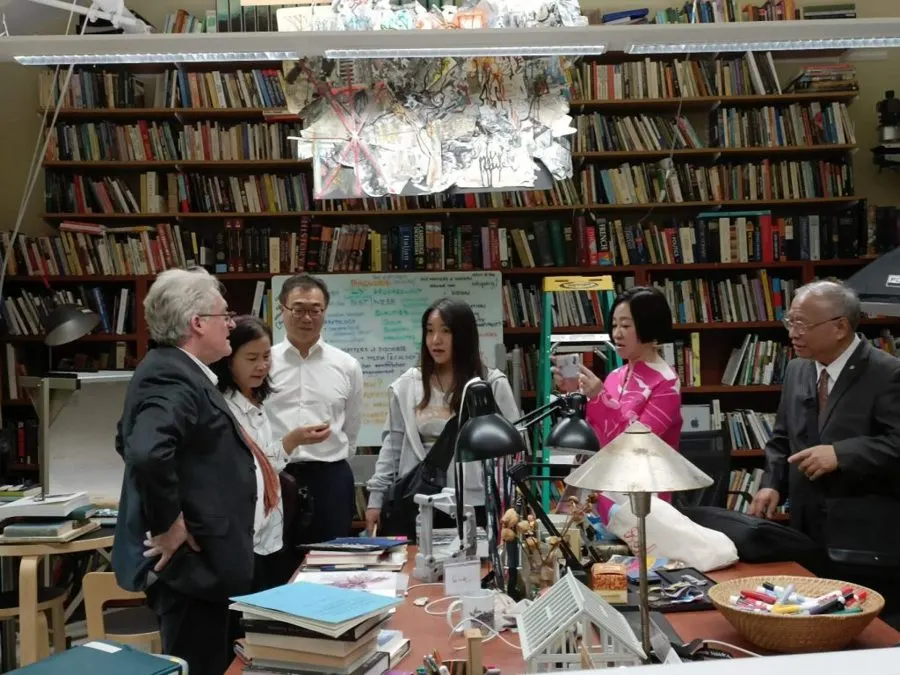

Dr. Eric Tao
CSU Monterey Bay
創新研究與創業
美國矽谷研究院院長兼董事長
史丹佛・柏克萊・加州州立大學｜2027 第 9 期
全球企業家 AI 創新與管理研究計畫
每月 1 次、台灣時間週日上午線上直播，三校教授帶你把 AI 用在自己公司的經營決策
創新企業與卓越人才獎學金：原則上 11 月底前送件適用
給準備帶公司走進 AI 時代的企業主與高階主管
差距不在有沒有用 AI，而在會不會用 AI 做決策。
立即預約一對一諮詢↗結業後一年內發表國際期刊，可再取得加州州立大學頒發的第 4 張證書

本計畫由美國矽谷研究院（SVRI）承辦，與三校合作開設研究中心專案。2027 年邁入第 9 期，至今合作企業 97 家、合作教授 43 位。
擁有 58 名諾貝爾獎得主；校友創辦 Google、Yahoo、Nike 等企業。
產生過 72 名諾貝爾獎得主，在電腦科學、人工智慧等領域享譽國際。
本計畫由蒙特雷灣分校（CSU Monterey Bay）授課，並頒發第 4 張期刊證書。


以上為歷屆美國矽谷 7 天 6 夜結業之旅（選配，費用另計）實景。
CSU Monterey Bay
創新研究與創業
美國矽谷研究院院長兼董事長

Stanford & UC Berkeley
Getting to Wow：現代企業領導力
Pegasus 創投合夥人，專注 AI 等深度科技投資
CSU Monterey Bay
新創融資
專長新創融資與公司治理
矽谷 IBM
全球新興技術
專長新興科技與科技創投
Stanford
矽谷設計思維
講授設計思維
矽谷科技公司高層
競爭性行銷
曾任西門子高層
Stanford
矽谷新創管理與資金
專研 AI 與法律
UC Berkeley
全球經濟學
柏克萊傑出教學獎得主
全程商業導師
*2027 年師資以校方公告為準
每月 1 次・台灣時間週日上午・每門 3 小時｜中英雙語＋即時翻譯，免語言成績
Dr. Eric TaoCSU Monterey Bay
Bill ReichertStanford & UC Berkeley
Dr. Christina ZhangCSU Monterey Bay
Dr. Ling Zong矽谷 IBM
Dr. Barry KatzStanford
Dr. Patricia (Patty) Wiggin矽谷科技公司高層
John KelleyStanford
Dr. Martha OlneyUC Berkeley
撥打 02-8988-2862，聊聊你的經歷與公司課題
訪問學者、博士後研究（研究身分，不是學位）或 EDP 總裁班
約 14 個工作天；未錄取者全額退費
2027 年 3 月開學，滿 12 人即開班
獎學金
原則上 11 月底前送件適用
資格與方案細節，由國際招生顧問一對一說明。費用包含課程、學術指導與證書；10 月底美國矽谷結業之旅為選配，費用另計。
立即預約一對一諮詢↗不是。結業取得史丹佛、柏克萊、加州州立大學三校結業證書與國際學術經歷；博士後研究為研究身分，不是學位。
適合。重點是經營決策，研究專題以你自己的產業與公司為題，不需要寫程式。
可以。中英雙語授課加即時翻譯，免語言成績。
每月 1 次、台灣時間週日上午，每次 3 小時，不需離職，也不需出國。
一樣，證書上不會有「網路班」字樣，並可辦理海牙或使館公證。
不保證。課程提供方法、案例與教授指導；實際成效仍取決於企業的產品、營運與後續執行。
一通電話，先確認你適合的身分別、上課方式與獎學金。
創新企業與卓越人才獎學金：原則上 11 月底前送件適用